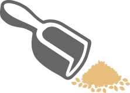
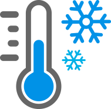

PHO SEASON

PHO SEASON
PHO SEASON is a local rice noodle manufacturing factory established by Phomein in 2015.
It produces rice noodles made of clear and transparent new rice harvested in Mekong Delta,
Vietnam and Herb-Bags for meat broth using 9 kinds of high quality natural spices.
Phomein is the only rice noodle brand that developed rice noodles with its own technology
in the domestic rice noodle market which has relied on overseas rice noodle industrial products.
The differentiation of Phomein due to the establishment of PHO SEASON will be a new standard
not only in Korea but also in the global rice noodle market.
From a grain of rice to a bowl of rice noodles.
In Phomein, you can feel the transparent color of Phomein new rice noodles
and the fragrance of freshly cooked new rice, which are completely different
from the traditional rice noodles made by mixing old rice and starch or flour.
In addition, the taste and flavor of thick and deep natural spices are strong
competitive power in modern society where ingredients become important.

4 seasons in a year, New rice
We receive fresh rice all year round from Vietnam with a climate and environment suitable for the production of dried rice noodles, especially the Mekong Delta region where triple –cropping is possible.
Clear purified water
In the Phomein Rice Noodle manufacturing process, water is as important as new rice and we use clean water (purified water) that removes about 70 kinds of pollutants such as residual drugs and environmental hormones through PHO SEASON’s purification technology
Unique technology, Machine drying
Unlike other obsolete noodle soup factories, hygienic drying is achieved with the mechanical drying technology developed by POMAIN. In this process, the white and transparent color is saved and the fragrance of new rice remains intact

Completion of noodles, Low temperature ripening
The ripening process is made at a low temperature to avoid unnecessary chemical additives. It combines the technology of Phomein which doubles the appropriate glutinosity, the softness, and the chewiness of noodles.
Luxury meat broth, Hub bags
Herb-Bags for meat broth using 9 kinds of high quality natural spices continue to improve quality. It is the Phomein’s secret of maintaining the taste and quality of the best meat broth